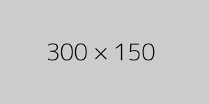

A high school senior at WhiteHouse SS, Khumaltar with experience in backend web application development using python and django framework. I'm passionate about Technology, Art and Literature. I love things simple and organized.
About Me
Tech + Art + Philosophy = Me
I am fueled by my passion for new technologies and art. I love to explore new things and learn from it. Robotics, photography, energy, philosophy, space and artificial intelligence are a few examples of my exploration. As I grow up, I am willing to gain more knowledge in each of these fields.
I dream of becoming a successful tech entrepreneur (not an asshole but a good one) and help solving real life world issues rather than exaggerating "making the world a better place".
Other than learning, I also like listening to music. I mostly listen to electro-pop, chill-step and indie. Painting is my another hobby. I find nature and space inspiring, so most of my paintings are related to these two subjects.
Three words that describe me: Chill, Creative & Curious
Work Experience
Urban SEO Center
A digital marketing agency based in New York. I was working as a marketing intern and part of my job was to manage clients' website and design prototypes for new products. However, due to coronavirus I couldn't complete the whole project.
The Glass Files
A software company where I worked with the software engineering team. My work included software testing, design thinking and fixing minor bugs.
Extra-Curricular Activities
BASE Robotics
Experience in architect design, 3d rendering, and software integration as well as team management. Despite being new to robotics, we made it to super-qualifier tournament in FTC competition twice.
Hack & Enterprise Club
Attended more than 25 programming events in last 2 years. Also led two teams to the final round in CS4ALL Hackathon.
Skills
Python
JavaScript
HTML
CSS
Vue
Bootstrap
Django
Learning Experience
I try my best to get out of my comfort zone and continue my exploration. Over the past few years I had some great opportunities to be a tiny part of some organizations, companies & schools by attending their events or participating in their competitions.

Rhinobotix | Team 8200
Trying to fix our robot's brick collection system after our second match.
Quotes
Throughout my journey of trying to figure out the world as a kid, I met so many awesome people who taught me valuable lessons. Their advice had a huge impact on my learning and thinking ability. Below are some quotes that made me see the world from a different perspective from conversations I had with a few of those people:
“Promise to never tear leaves off of trees.”
- Ashraf
“Learn as much as you can... We are people of color, so we have to go through a lot of discrimination.”
- Nathalia Griffith
I found a much deeper meaning in these quotes than probably what they intended to mean. But I love being philosophical.